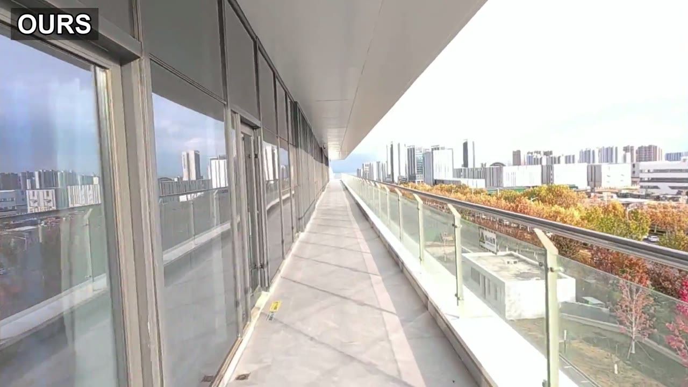

AI RAW NR · Interactive Demo
降噪前后对比
左右拖动中间的竖线，查看同一场景在噪声图与降噪图之间的差异。

NOISY · 噪声
DENOISED · 降噪
拖动 / 点击画面移动对比线
键盘 ← → 微调
占位示例：左侧噪声由合成噪声模拟，仅用于演示交互效果，不代表最终算法指标。后续会替换为真实 RAW 降噪结果。
AI RAW NR · Interactive Demo
左右拖动中间的竖线，查看同一场景在噪声图与降噪图之间的差异。

占位示例：左侧噪声由合成噪声模拟，仅用于演示交互效果，不代表最终算法指标。后续会替换为真实 RAW 降噪结果。